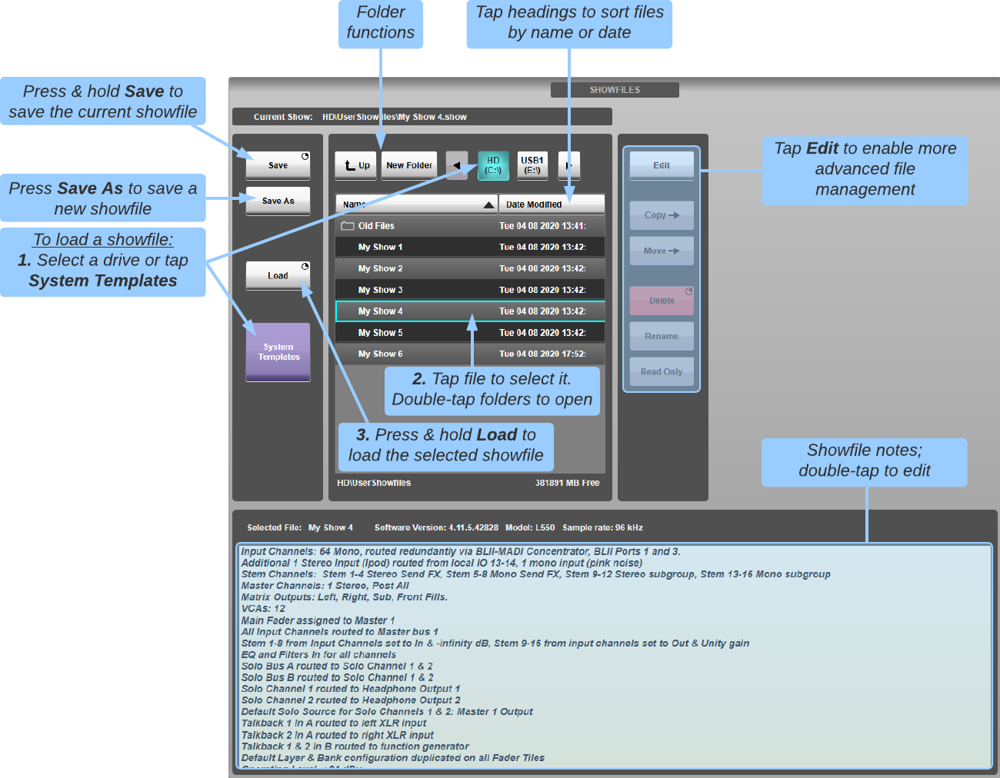

Showfiles
SSL Live console settings are saved and recalled with showfiles. In addition to saving you from having to recreate all of your settings each time you switch between projects, it also allows you to transfer configurations between consoles.
SSL have created a number of templates which provide a starting point from which you can create your own showfiles. This also means that the task of setting up your console may be very straightforward, as we've already done most of it for you.
Begin by loading an SSL Template. To do this tap System Templates, select a template and press and hold Load.
Note: At the very top of the main screen there is a status display that logs a range of console activity, including showfile management functions. This area goes red to indicate that a procedure has not been successful. Double tap the message area to open the Status Messages window for further information.Showfiles are saved and loaded using the Showfiles screen, accessed by selecting MENU > Setup > File Manager > Showfiles tab.
The following screen will appear:

Showfile List Navigation
To access SSL's template showfiles, touch System Templates. The details of the template's contents are shown in the Notes area for each template.
To access User showfile, start by ensuring that System Templates is inactive. Drives will then be listed across the top of the showfile list, with the internal drive shown as HD, and USB drives listed in the order in which they were plugged in. Touch a drive to select it, using the arrow buttons to scroll the list if necessary.
Notes:USB drives can be inserted into any of the USB ports on the console. There is one towards the top-right of the control surface (top left on L200, L450 and L650), one under each end of the front of the console, and four on the back of the console. USB drives do not need to be ejected before being removed.
USB drives should be used for file transfers (copy) only. Loading or saving showfiles directly to USB is not recommended due to the risk of drive removal mid-operation. If loading a showfile, copy it to the internal drive first and load from there. If saving a showfile, save to the internal drive initially and make a copy to the USB drive.
The contents of the selected location are shown in the showfile list below the drives. You can scroll the list up and down by swiping the screen.
Folders appear at the top of the list, indicated by folder icons; double-tap them to open them, and touch Up to move back up a level.
Tap the Name or Date Modified column headings to sort the files alphabetically or by date order (tap the same column heading to toggle between ascending and descending order).
Touch a showfile to select it – it will become highlighted with a cyan surround.
The Edit button accesses the functions listed below it; these are described below.
For loading and saving showfiles, Edit must be inactive.
To create a new folder in the current location, touch New Folder. You can then rename the folder as described below.
Load, Save, Save As
Loading
To load or save a showfile, start by selecting the showfile to be loaded or overwritten.
Ensure that the Edit button is inactive.
To load the selected showfile, press & hold Load.
Pressing and holding Load with Owner Override allows the operator to load a showfile and override any ownership states currently on the network.
Any existing device control and Dante subscription ownership states will be overwritten by the ownership states included in the selected showfile.
Notes:Using Load with Owner Override has the potential to:
- Remove active routes from other devices to receivers utilised in the showfile being loaded.
- Remove control of stageboxes from other consoles on the network.
Take great care to ensure this action is correct.
Saving
To save the current desk configuration as a new file, press Save As. Name the new showfile using the keyboard which appears, and touch OK. This showfile will then become the loaded showfile.
Notes:SSL Template showfiles cannot be overwritten. Use the Save As function to save them as your own showfile to save any changes.
Files preceded by a padlock symbol cannot be overwritten, as described below.
To save the current desk configuration over the existing showfile, press & hold Save.
Showfile Notes
Any pertinent details about a showfile can be typed into the Notes display, beneath the showfile list.
To type notes for a showfile, navigate to the showfile and Select it so that it has a cyan surround. Its name will be shown above the notes display.
Double-tap inside the notes display, then type the notes using the keyboard which appears, and touch OK.
These notes will appear in the notes display whenever that showfile is highlighted in the showfile list.
Edit Mode
A number of folder actions are only available when the showfile list is in Edit mode.
To activate Edit mode, touch the Edit button in the top-centre of the screen. The button will 'light' and a second navigation pane will appear in the right side of the screen.
To select a showfile to be edited using any of the edit actions listed between the panes, navigate to it in the left navigation pane and touch the circle at the end of its list entry – the circle will go red to indicate that the showfile is Edit Enabled.
You can select multiple showfiles and multiple folders for edit. You can also select all showfiles and folders in the current location by touching the All circle at the top of the list.
Remember: Edit mode functions always act on the showfiles which are Edit Enabled, and not on showfiles which are highlighted (displayed with a cyan surround).Moving and Copying Showfiles
To move or copy files and folders, navigate to the source folder in the left pane, and the destination folder in the right navigation pane;
In the left navigation pane, Edit Enable the items to be moved or copied;
Now press the Move or Copy button in between the two panes. The items will be moved or copied to the new location.
Notes:The currently loaded showfile cannot be moved. Items cannot be copied into their current location.
Making Showfiles Read-Only
You can make showfiles read-only in order to prevent them from being overwritten via the Save function.
To select the showfiles to be made Read-Only, navigate to them in the left navigation pane and Edit Enable them.
Now press the Read Only button in between the two panes. A padlock symbol will appear before the file names.
To undo a file's Read Only status, simply repeat this procedure.
Renaming Showfiles and Folders
To rename a file or folder, navigate to it in the left navigation pane and Edit Enable it.
Now press the Rename button between the panes, rename the showfile using the keyboard which appears, and touch OK.
Deleting Showfiles and Folders
To delete showfiles or folders, navigate to them in the left navigation pane and Edit Enable them.
Now press & hold the Delete button between the panes.
Note: Folders must be empty before they can be deleted. Showfiles with Read Only protection cannot be deleted.Backup Showfiles
The console saves a backup showfile with the state of the console every minute, so this is the most you will lose in the event of a power loss.
When restarting the console it will always load the most recent backup showfile for you, so it's ready to go.
Note: If the last showfile loaded or saved was to a USB drive, the backup showfile will not be loaded when restarting the console. This is a security feature to prevent visiting engineers' showfile data from persisting in the system.Status Bar Indication
The name of the currently loaded showfile is displayed at the very top of the screen, towards the right-middle of the status bar. One of the following icons will be displayed to the left-middle of the status bar:
| The Current showfile is saved to the user's showfile and no pending changes to any part of the showfile are detected by the system; | |
| Part of the Current showfile has changed since last user Showfile save and the changes are saved on the console's backup system; | |
| Part of the Current showfile has changed since last user Showfile save and the changes are not yet saved on the console's backup system; | |
| The system is currently saving or loading showfile data, either to/from user file, or from the console's backup system. |
Which parameters are stored in Showfiles?
A list of parameters stored in showfiles can be found in the Parameters & Settings Storage page.
Showfile Compatibility
Old showfiles will always load on newer versions of software. However, new showfiles may not load on previous versions of software, due to new feature data not being recognised by older software. This includes versions of SOLSA, so it is important that any installations of SOLSA are kept up to date in line with console software to ensure showfiles can be edited offline.
Useful Links
PresetsIndex and Glossary